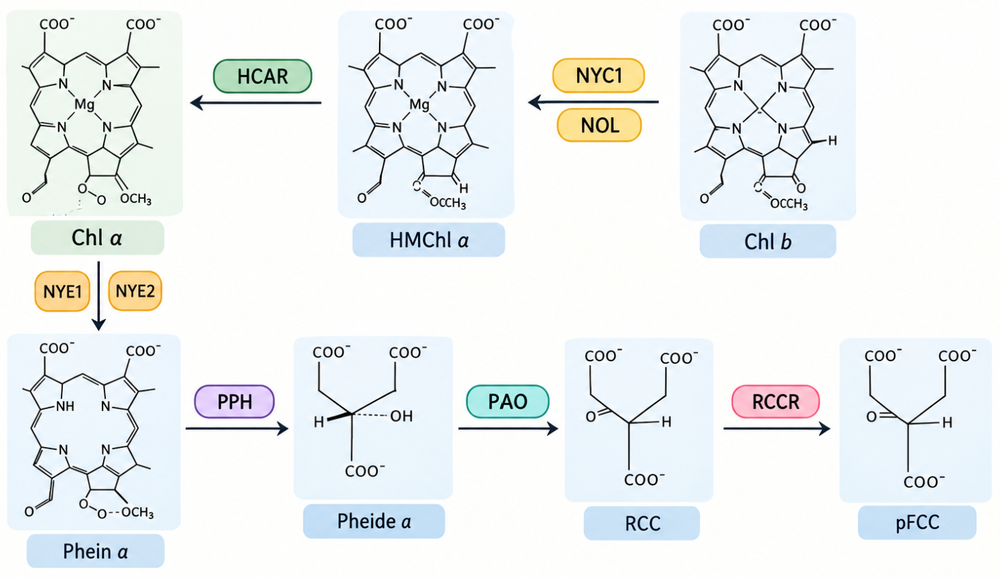
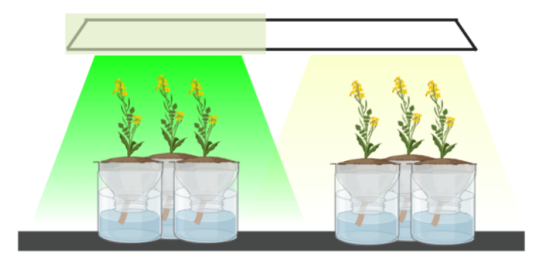
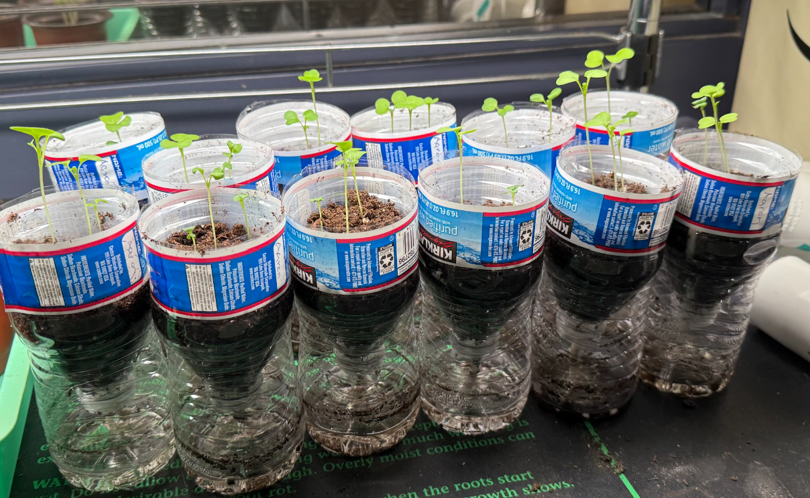

Chlorophyll is a photosynthetic pigment responsible for capturing light energy and transferring it for use. It additionally creates other pigments integral to photosynthesis. In plants, chlorophyll may degrade as aging occurs. The chlorophyll degradation process detoxifies the chlorophyll, keeping the plant healthy. This is done through the PAO pathway, which involves multiple enzymes to break down the chlorophyll into nonfluorescent and fluorescent chlorophyll catabolites. The nonfluorescent chlorophyll catabolites detoxify the senescent leaves, while the fluorescent chlorophyll catabolites remain and can visibly glow under certain conditions.
The results from this research experiment could have numerous effects on agriculture and botany.


The research experiment was conducted in two parts. The first part involved monitoring liquid chlorophyll under red, blue, green, and white light over 48 hours. The second part involved monitoring Brassica rapa under the same light conditions over 48 hours. Both parts were conducted in three trials to ensure accuracy and reliability of the results.
The percent change in saturation was calculated for each trial and the averages were compared within each part and across each part of the experiment.